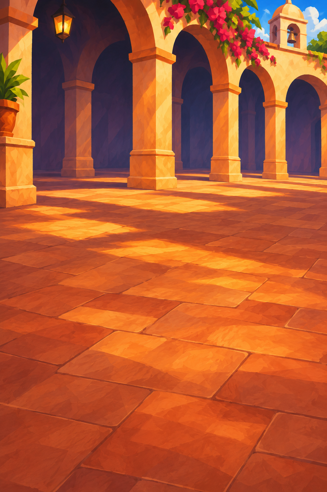
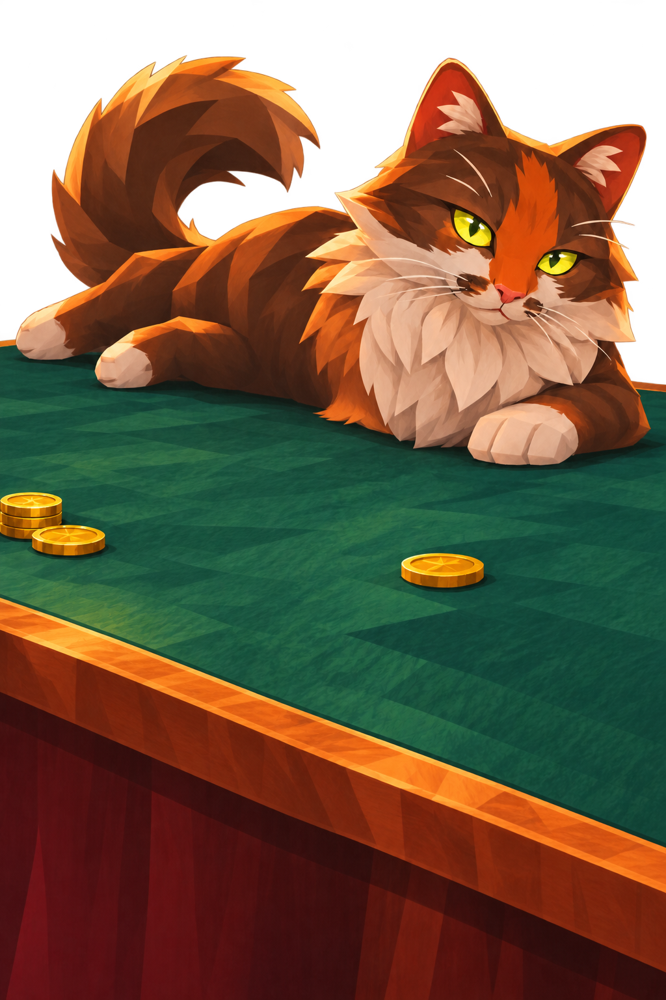
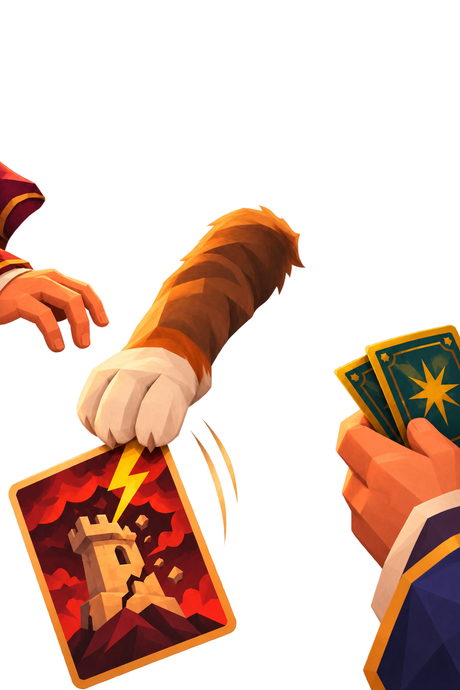

El Gato — The Helpful Knock
Move over the layered image to preview depth. Toggle layers to inspect the cutouts.
Three layers combined



Each layer uses the same 1024 × 1536 canvas and top-left origin. The center and foreground have alpha transparency. Stack background → center → foreground, without trimming transparent margins. Motion is expressed in source-image pixels; the demo uses a shared 3% zoom to conceal canvas edges. At rest, the preview uses the original full canvas. Generative separation reconstructs hidden areas and can introduce small differences from the original.